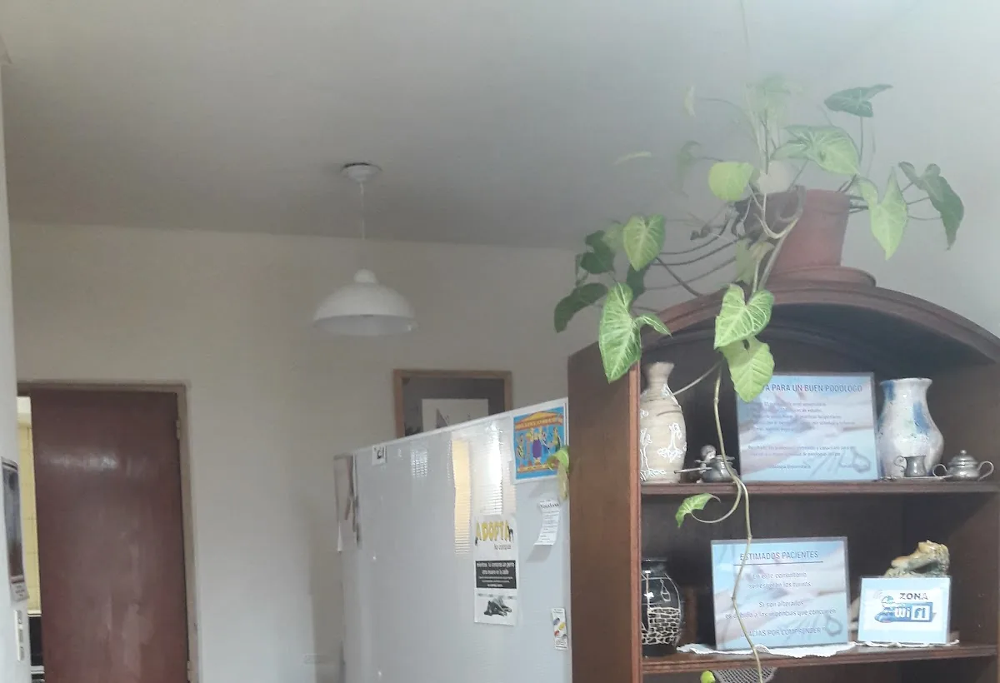

4,9 en Google
380 reseñas
Podóloga UBA · Caballito
Rosalía Olszak
Consultorio en José Bonifacio 1633. Tratamiento de uña encarnada con seguimiento, y atención de adultos y de chicos.
4,9 en Google
380 reseñas
Podóloga UBA · Caballito
Consultorio en José Bonifacio 1633. Tratamiento de uña encarnada con seguimiento, y atención de adultos y de chicos.
En el consultorio de Caballito: el cuidado de una podóloga UBA, el tratamiento de uña encarnada con seguimiento, y la atención de adultos y de chicos.
4,9 sobre 5, con 380 reseñas. Estas cuatro son de 5 estrellas, copiadas al pie de la letra.
la recomiendo muchísimo! Tenía una uña encarnada hacía años y no me animaba a atenderme con nadie porque siempre me hacían doler. Con ella fue totalmente distinto: súper cuidadosa, profesional y no me hizo doler nada. Si están dudando en ir, no lo duden porque es buenísima. 100% recomendable!
Gracias ♥️ Rosa por existir, como te dije hoy no te jubiles por favor!!! Gracias por curarle el dedito a mi bebe y sin dolor. Lamentablemente heredó mis uñitas 😭 pero por suerte estas vos 💕🙌✨️ Dios bendiga tus manos ✋️ 🙏
Fui con el dedo a la miseria. Me atendí con Rosalía con pocas esperanzas de recuperarme de forma rápida. En 3 días, gracias a su tratamiento, dejé de tener dolor y reparó el daño de la uña encarnada. Recomiendo altamente a ella como profesional, ya que su seguimiento genera que no vuelvas a recaer en este problema crónico
Hace unos meses que la visito a Rosalía y realmente me cambió la forma de las uñas. Hace 18 años que iba sistemáticamente a la podóloga y resulta que no había encontrado el tratamiento adecuado aún. Realmente sabe muchísimo! Destaco la paciencia y el buen trato. Recomiendo!!
José Bonifacio 1633, C1406GXK, Caballito.

Escribime por WhatsApp o llamame. El consultorio está en José Bonifacio 1633, Caballito.